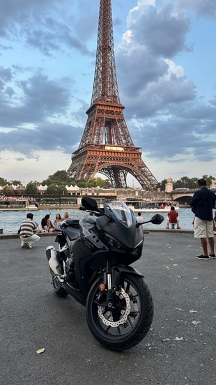
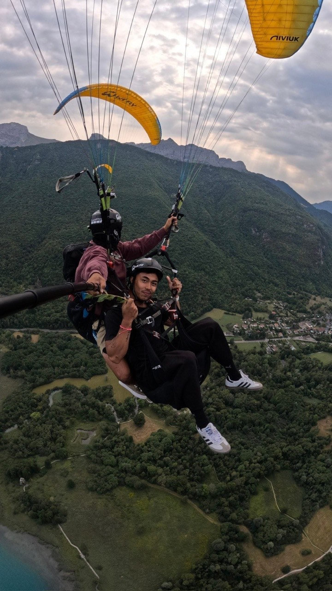

Nice to meet you, I'm Daryl.
Product Designer. Sports lover. Always smiling.




People often describe me as a ray of sunshine. And there's never a dull moment with me.
Career-wise, I started out wanting to be a developer. Then I discovered design: a place where you're allowed to get it wrong and start again. Today, I'm coding again, with AI. Things have come full circle.
I'm the organised type, a bit of a perfectionist, and curious about everything. A complicated product? I want to make it simple.
Off screen, I play football, the ultimate team sport. I also run, go to the gym, and head off hiking or on my motorbike. In 2027, I'm aiming for a marathon and a triathlon. An Ironman? One day, maybe.
I also have two special passions: scuba diving, and the 24 Hours of Le Mans, which I go to almost every year with my dad. The rest of the time: movies (team Marvel), restaurants, travel, and always surrounded by good people. Not forgetting my two cats, who rule the house.
What's next? Passing it on in turn: teaching, mentoring designers, and maybe managing them one day.
Open to a permanent role · Paris area
Your next Product Designer might just be me.
I'm looking for a team where I can design useful products, from the field all the way to code. Let's talk.